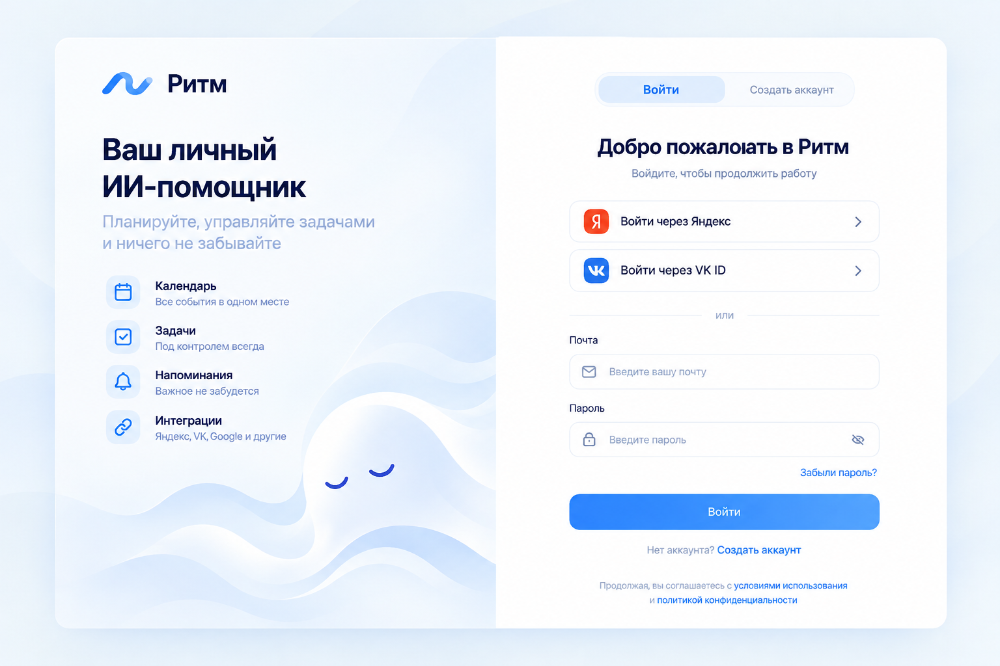
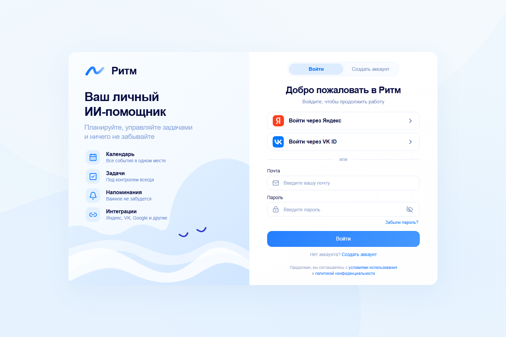
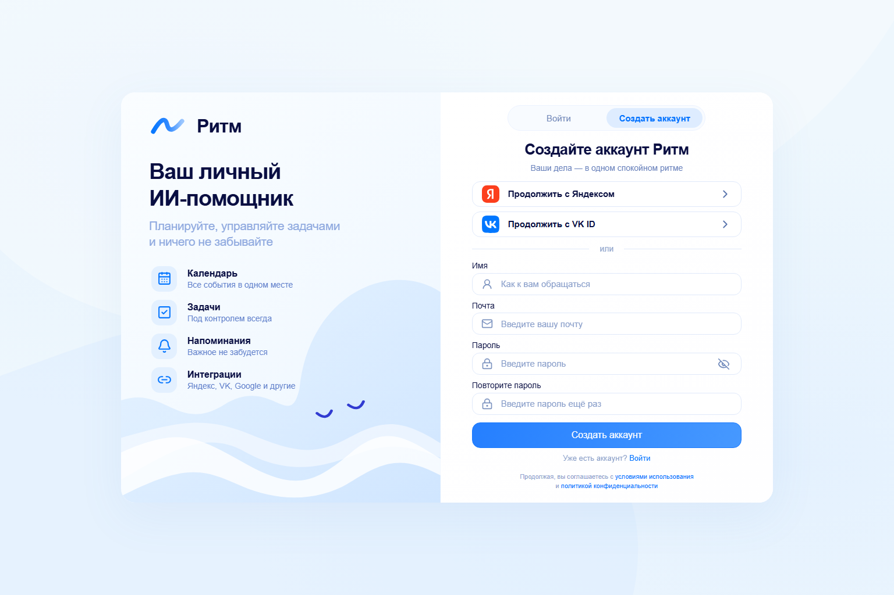
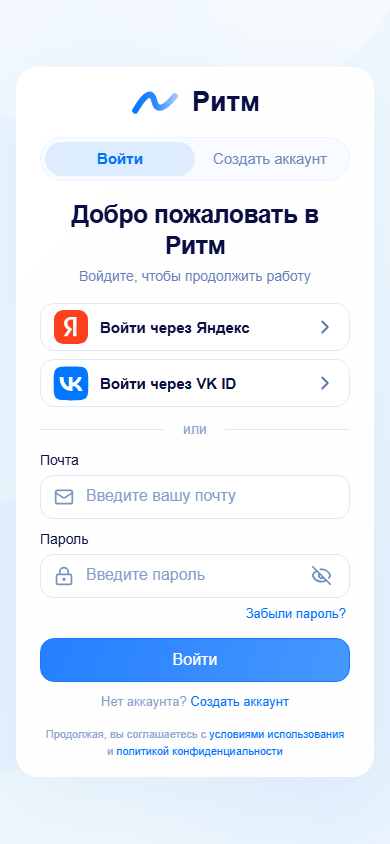
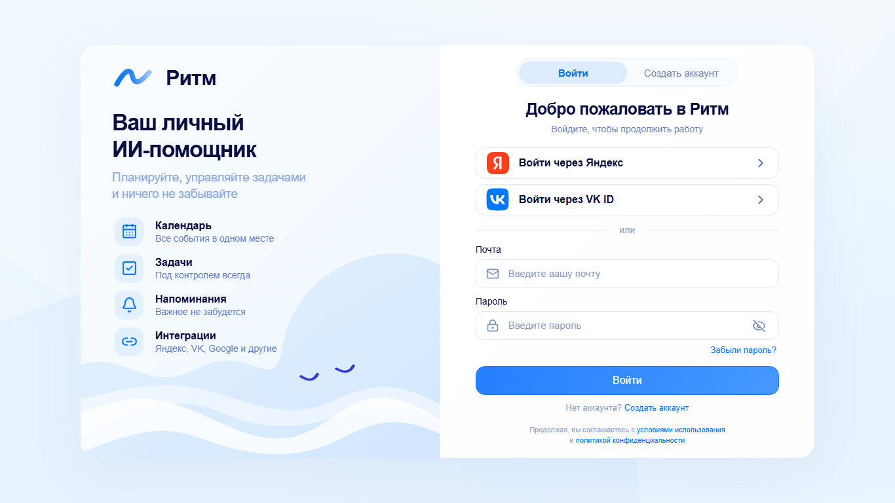
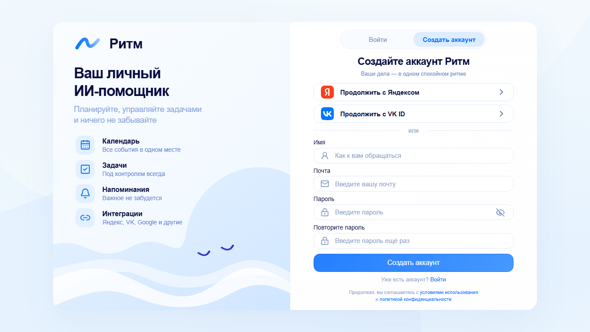
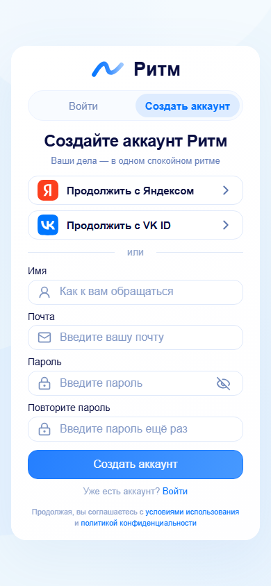

Ритм · утверждённый reference / React
REFERENCE

ACTUAL · 1536 × 1024

Регистрация

Мобильный экран

Вход · 1366 × 768 · без прокрутки

Регистрация · 1366 × 768 · без прокрутки

Регистрация на мобильном экране · 390 × 844
